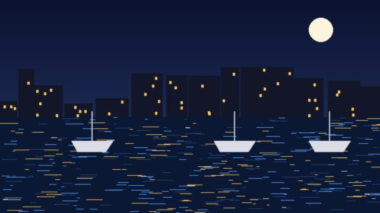
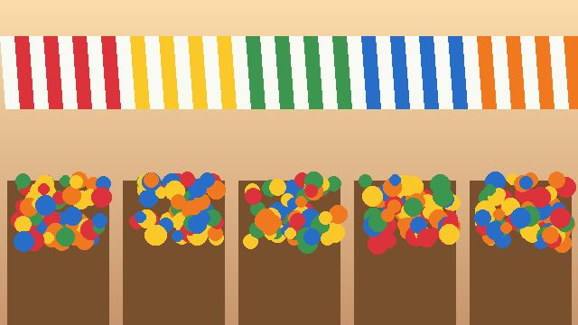
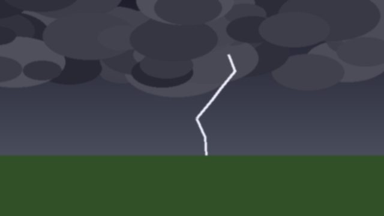

LIVE The bay glows blue for a third night as the bloom spreads along the coast
Crowds gathered on the quay to watch the waves light up as they broke.
Watch: the bloom from the air
2 hrs ago · Science

3 hrs ago · Local

5 hrs ago · Weather
8 hrs ago · Science
1 day ago · Weather